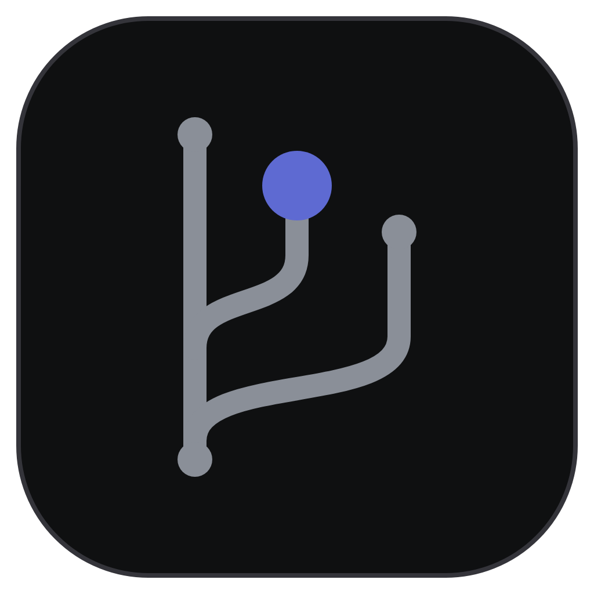
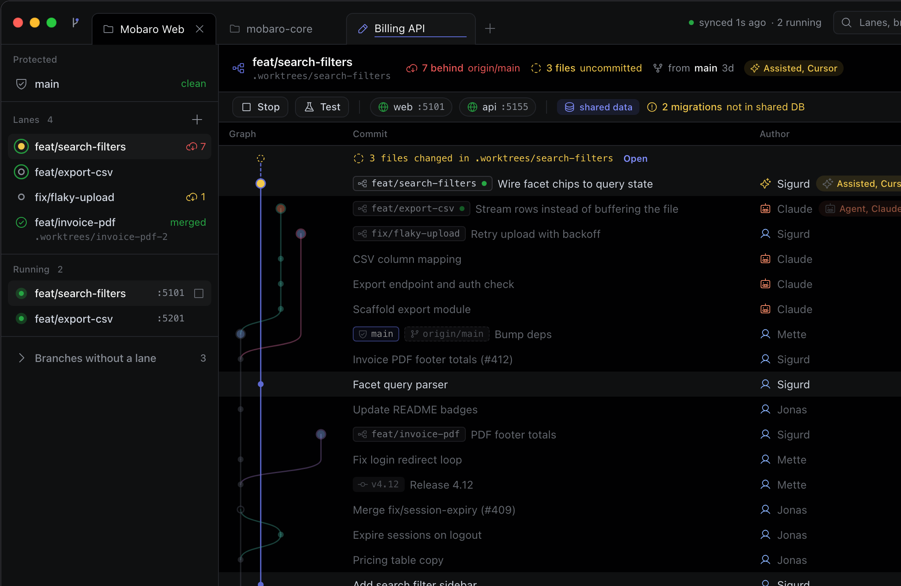
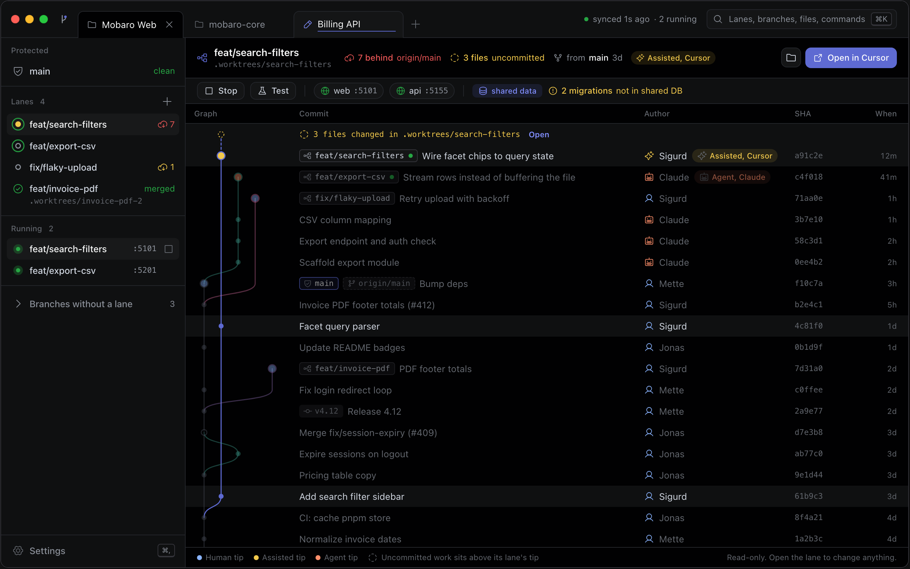
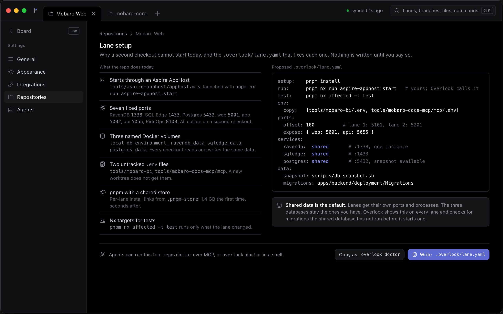
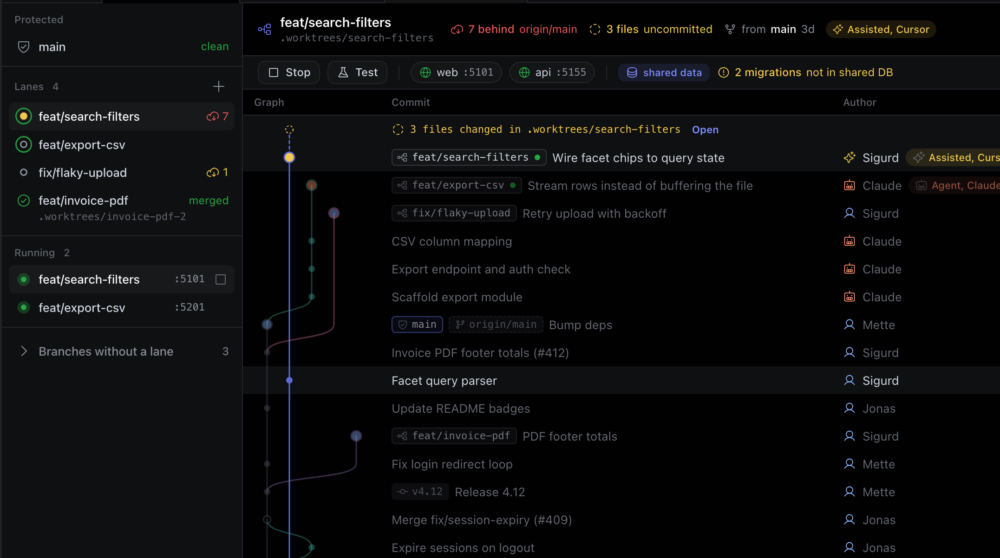
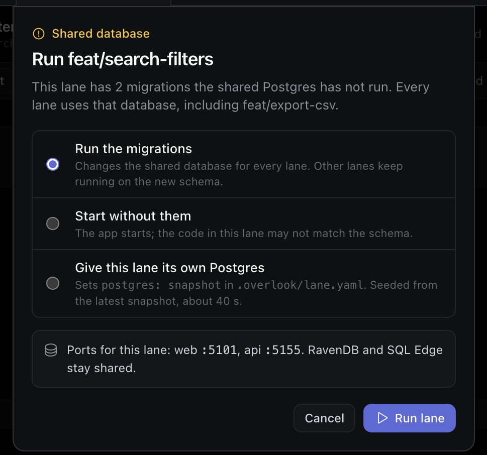
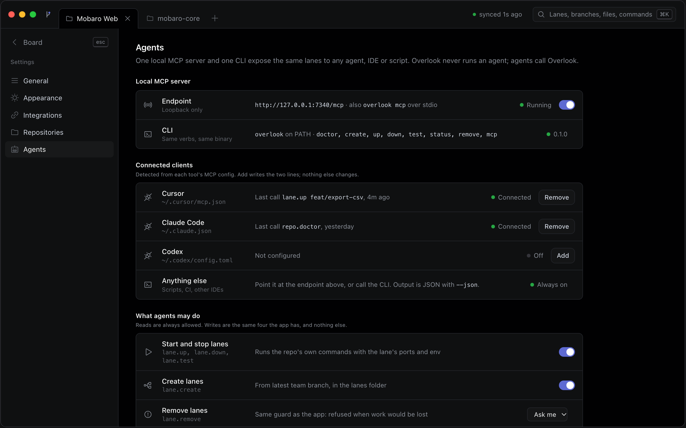
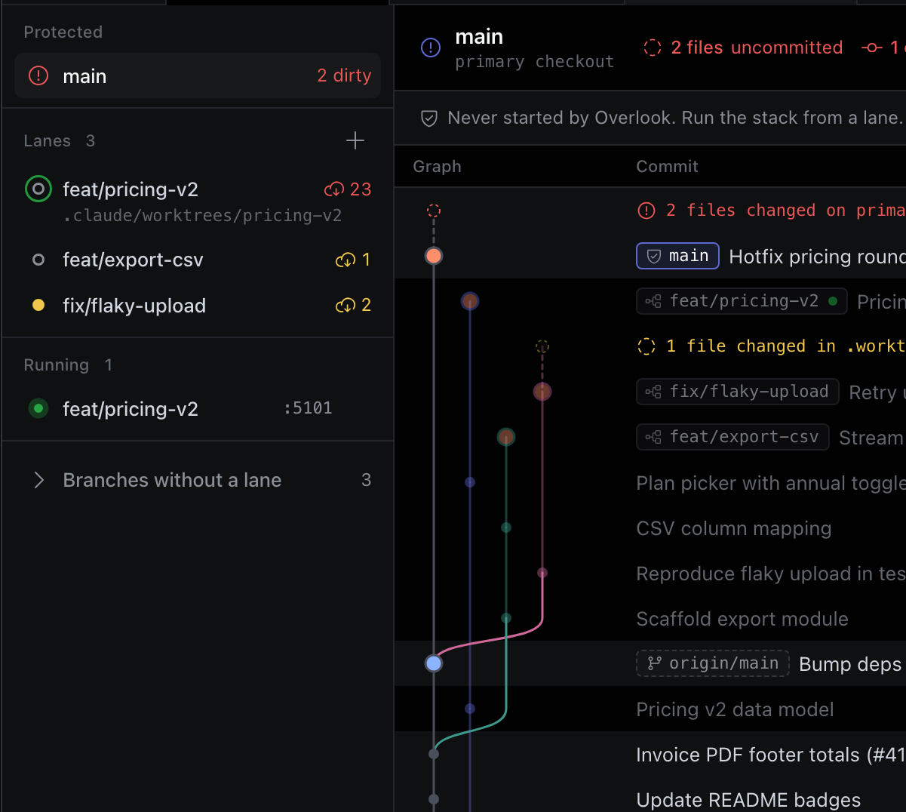
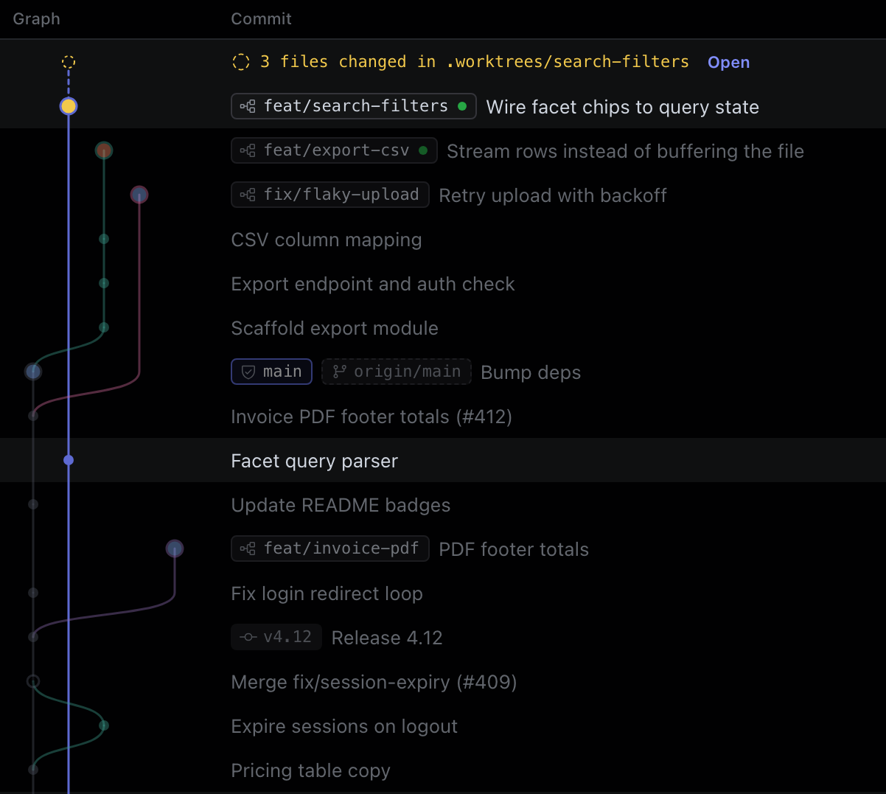
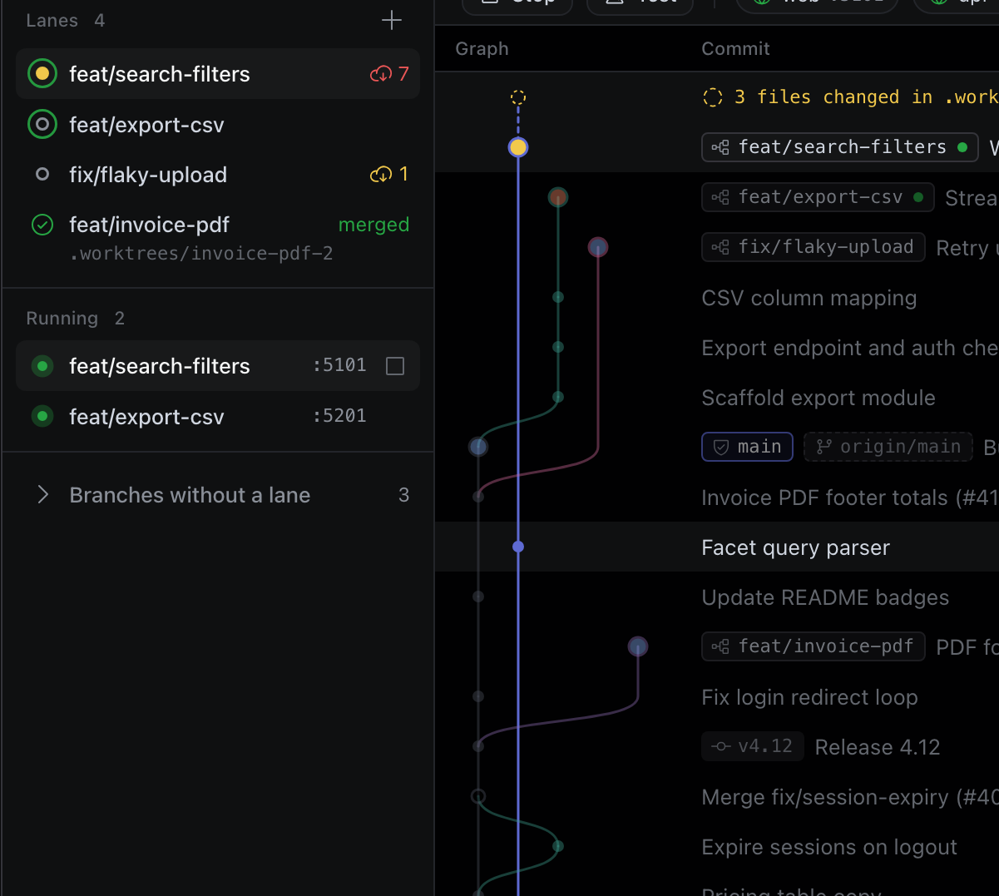

OverlookA Mac git client where every worktree is a lane: measured against main, started on its own ports with your own commands, handed to any agent.

A second checkout of the main repo collides on seven ports, shares three databases, and needs a 1.4 GB install. Nobody wrote that down, so nobody makes a second checkout. A worktree you cannot run is a worktree nobody makes.
scripts/mine.sh and scripts/prs.sh, 6 Nov 2026; mobaro/tools/aspire-apphost/apphost.mts. Full tables in PRODUCT.md.


Settings › Repositories › Lane setup. Overlook reads the repo and lists why a second checkout cannot start: ports, volumes, env files, the install.
Then it proposes .overlook/lane.yaml: setup, run, test, a port offset per lane, which services are shared. You press Write.
It does not run your app. It calls your command. Aspire, docker compose, three shell scripts, make dev: whatever starts the stack today is what a lane starts.
The file lives in the repo, so every teammate and every agent gets the same lanes, with or without Overlook open.

One click. Run starts the lane's stack with its port offset. :5101 is lane 1, :5201 is lane 2. The URLs sit on the lane.
Always visible. Which lanes are up, on which ports, in the panel, the graph and the title bar. Stop from any of them.
Test runs the lane's test command and keeps the last result next to it.

Why not isolate everything? Own copies of three databases per lane cost minutes and gigabytes each time. People stop making lanes. Sharing is what you already do when you switch branches in one checkout.
So Overlook makes the hazard visible instead. A shared data badge on every lane. Before Run, it checks the lane's migrations against the shared database. If they differ, you get three plain choices and the cost of each.
Per service. Postgres can be a snapshot while RavenDB stays shared. The choice is in the file, where the team sees it.
claude › fix the CSV export streaming and show me it working overlook.lane.create { name: "export-csv" } → lane 2 .worktrees/export-csv setup 41 s … edits apps/backend/Export/StreamWriter.cs, 3 files overlook.lane.up { lane: 2 } → drift: 0 shared: ravendb sqledge postgres → web http://localhost:5201 api http://localhost:5255 overlook.lane.test { lane: 2 } → passed 12 projects 2 m 04 s claude › Running on localhost:5201. Tests pass. overlook › ● feat/export-csv running :5201 Agent, Claude
Seven calls: doctor, create, up, down, test, status, remove. Served by overlook mcp over stdio, and the same names as a CLI.
Claude Code, Cursor, Codex, a shell script: anything that speaks MCP or can run a CLI. Configure it once per machine; no Overlook code inside any of them, and no opinion about which model or workflow you use.
Nothing is hidden. The lane the agent made shows on the board like any other: behind, authorship, running, shared data.

One endpoint, loopback only, and the same verbs as a CLI. Overlook sees which tools are wired up and what they last called.
Add is two lines in the tool's own MCP config. No Overlook code inside Cursor, Claude Code or Codex, and no opinion about the model.
Writes are the app's four: start and stop, create, remove, write the manifest. Remove and write ask by default. Reads are always open.
| Tool | Graph, measured against main | Runs any worktree | Knows what data is shared |
|---|---|---|---|
| GitKraken 12.6 | Partial. Graph yes; "ahead/behind" on agent cards, against what is undocumented | No | No |
| Conductor 0.93 | No graph | Only its own workspaces, with the agents it launches | A switch that stops the other workspace |
| Fork, Tower, lazygit, teebe | Partial. Behind upstream, not main | No | No |
| Cursor, Claude Code | No | Setup scripts only; no run, test or ports | No |
| Overlook | Graph; behind origin/main, protected main, authorship | Any worktree, any agent, from a file in the repo | Per service, with a drift check before Run |
Shipping versions and docs, fetched 6 Nov 2026. Sources and the full audit in PRODUCT.md.



Decision rules, the ask and the risks are in PRODUCT.md.